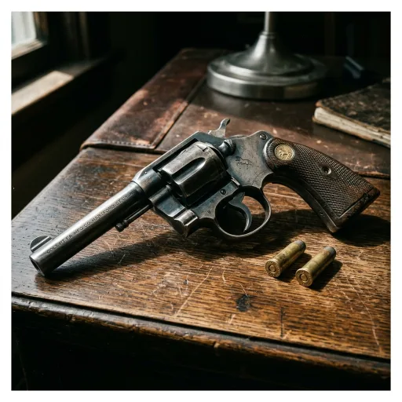

Rewolwer Colt Police Positive .38
Colt Police Positive .38 Revolver
Prompt studyjny
Photorealistic period object study of a blued steel Colt Police Positive .38 revolver with checkered walnut grip, resting on a worn dark oak detective desk next to two brass cartridge casings, dramatic side directional lighting, 1920s art deco noir atmosphere, authentic metal patina, square composition, macro photography, no hands, no people, no text, no modern elements